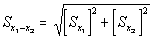

{kind=link}
{kind=link}
Commercial Buildings Energy Consumption Survey (CBECS)
1995 CBECS Survey Data 2012 | 2003 | 1999 | 1995 | 1992 | Previous
- Building Characteristics
- Consumption & Expenditures
- Microdata
- Methodology
Consumption and Expenditures
All Principal Buildings Activities
| Number of Buildings (thousand) | Total Floorspace (million sq. ft.) | Total Consumption(trillion Btu) | ||
|---|---|---|---|---|
| Site Energy | Primary Energy | |||
| All Buildings | 4,579 | 58,772 | 5,321 | 10,587 |
| Principal Building Activity | ||||
| Education | 309 | 7,740 | 614 | 1,059 |
| Food Sales | 137 | 642 | 137 | 376 |
| Food Service | 285 | 1,353 | 332 | 668 |
| Health Care | 105 | 2,333 | 561 | 987 |
| —Inpatient | 22 | 1,641 | 484 | 824 |
| —Outpatient | 83 | 692 | 77 | 163 |
| Laboratory | 25 | 455 | 108 | 203 |
| Lodging | 158 | 3,618 | 461 | 839 |
| —Lodging, other than Skilled Nursing | 127 | 2,895 | 349 | 644 |
| —Skilled Nursing | 31 | 723 | 112 | 195 |
| Mercantile and Service | 1,289 | 12,728 | 973 | 1,998 |
| —Enclosed Shopping Mall | 12 | 1,817 | 94 | 246 |
| —Strip Shopping Center | 130 | 2,887 | 181 | 447 |
| —Retail, other than Shopping Mall | 562 | 4,423 | 288 | 593 |
| —Service, other than Food Service | 585 | 3,601 | 410 | 712 |
| Office | 705 | 10,478 | 1,019 | 2,383 |
| Public Assembly | 326 | 3,948 | 449 | 793 |
| Public Order and Safety | 87 | 1,271 | 124 | 222 |
| Religious Worship | 269 | 2,792 | 104 | 170 |
| Warehouse and Storage | 580 | 8,481 | 325 | 680 |
| —Nonrefrigerated | 573 | 8,262 | 302 | 625 |
| —Refrigerated | 7 | 219 | 22 | 55 |
| Other | 42 | 548 | 64 | 122 |
| Vacant | 261 | 2,384 | 51 | 87 |
| Relative Standard Errors (percent) |
||||
| All Buildings | 3.9 | 3.4 | 4.8 | 4.8 |
| Principal Building Activity | ||||
| Education | 11.0 | 6.9 | 9.1 | 8.7 |
| Food Sales | 14.2 | 12.5 | 17.7 | 17.3 |
| Food Service | 10.6 | 12.5 | 17.9 | 19.2 |
| Health Care | 18.6 | 8.7 | 15.4 | 15.4 |
| —Inpatient | 34.1 | 8.4 | 17.4 | 17.6 |
| —Outpatient | 21.1 | 19.9 | 23.8 | 23.6 |
| Laboratory | 41.7 | 27.0 | 40.1 | 37.0 |
| Lodging | 12.5 | 9.6 | 11.3 | 11.2 |
| —Lodging, other than Skilled Nursing | 13.9 | 11.1 | 14.6 | 13.9 |
| —Skilled Nursing | 23.1 | 14.5 | 20.6 | 20.8 |
| Mercantile and Service | 7.3 | 6.9 | 10.6 | 8.9 |
| —Enclosed Shopping Mall | 49.7 | 19.2 | 32.4 | 35.7 |
| —Strip Shopping Center | 18.9 | 12.6 | 14.7 | 15.8 |
| —Retail, other than Shopping Mall | 8.8 | 10.6 | 12.4 | 11.8 |
| —Service, other than Food Service | 10.6 | 10.1 | 19.4 | 15.4 |
| Office | 7.5 | 6.2 | 9.8 | 10.8 |
| Public Assembly | 13.9 | 9.6 | 11.0 | 12.0 |
| Public Order and Safety | 25.4 | 17.3 | 24.0 | 28.3 |
| Religious Worship | 12.3 | 9.7 | 12.8 | 11.0 |
| Warehouse and Storage | 11.7 | 10.1 | 15.2 | 14.9 |
| —Nonrefrigerated | 11.7 | 10.2 | 16.2 | 15.8 |
| —Refrigerated | 41.9 | 42.2 | 34.0 | 29.0 |
| Other | 33.1 | 27.6 | 37.6 | 35.2 |
| Vacant | 13.9 | 15.2 | 29.9 | 27.6 |
| Source: 1995 Commercial Buildings Energy Consumption Survey Energy Information Administration. | ||||
Guide to the 1995 CBECS Detailed Tables
Released: Dec 2006
The first set of detailed tables for the 1995 CBECS consists of building characteristics (BC) tables 1 through 44, which contain the number of buildings and amount of floorspace for major building characteristics. BC Tables 1 and 2 of this set are summary tables. BC Tables 3 through 17 address location, building size, year constructed, number of workers, hours of operation, and types of occupancy. BC Tables 18 through 28 contain data about the energy sources used for all end uses and for specific major end uses. BC Tables 29 through 44 contain data about percent of floorspace heated, cooled, and lit, energy-using equipment types, and conservation measures used in the buildings.
The second set of tables consists of energy consumption and expenditures (CE) tables 1 through 31, which present detailed energy consumption and expenditure data for buildings in the commercial sector. These tables are grouped into major fuel tables (CE Tables 1 through 8) and specific fuel tables. The specific fuel tables consist of CE Tables 9 through 19 for electricity, CE Tables 20 through 25 for natural gas, CE Tables 26 through 29 for fuel oil, and CE Tables 30 and 31 for district heat.
The third set of tables consists of energy end-use (EU) Tables 1 through 6, which contain estimates of the amount of natural gas and electricity that is consumed for nine specific end uses: space heating, cooling, ventilation, water heating, lighting, cooking, refrigeration, office equipment, and other.
The column categories most commonly classify data by building characteristics or by consumption and expenditures. The following data items, listed in alphabetical order, are explanations of some of the column categories found in the set of energy consumption and expenditures tables that may require clarification.
Conditional Energy Intensity—The amount of electricity, natural gas, fuel oil, or district heat used per square foot in buildings using the specified energy source. For example, in consumption and expenditures (CE) Table 11, data in the row labeled "Electricity" under "Energy Sources" and in the column labeled "Northeast" under "Electricity Energy Intensity" would read: "Buildings in the Northeast that used electricity as an energy source used 11.2 kilowatthours of electricity per square foot."
Demand-Metered Buildings—Buildings that have meters to measure peak demand (in addition to total consumption) during a billing period. Peak demand is usually metered only for electricity.
Distribution of Building-Level Intensities—The amount of energy used per square foot, divided into three percentiles: 25th, median, and 75th. In CE Table 10, for example, the row labeled "Education" under "Principal Building Activity" and in the column labeled "25thPercentile" under "Distribution of Building-Level Intensities" would read: "In 1995, 25 percent of U.S. education buildings used 4.3 kilowatthours per square foot or less. (75 percent of the buildings used more than 4.3 kilowatthours of electricity per square foot.)"
Electricity—Site electricity. (See "site electricity" and "primary electricity" in this listing.)
Energy Intensity—Usually defined as "gross energy intensity" or "conditional energy intensity" in title of table. If table title does not specify, "energy intensity" is to be defined as "conditional energy intensity."
Floorspace—The enclosed area in a building; the sum of the floorspace in all buildings in a category.
Gross Energy Intensity—The ratio of the total amount of energy consumed by a group of buildings to the total floorspace of those buildings, including buildings and floorspace where the energy source is not used. For example, in CE Table 5, data in the row category "Education" under "Principal Building Activity" and in the column category of "Northeast" under "Energy Intensity for Sum of Major Fuels" would read: "Education buildings in the Northeast consumed 83.4 thousand Btu per square foot."
Major Fuel—Major energy sources: electricity, natural gas, fuel oil, and district heat (district steam or district hot water). Although electricity is technically not a fuel, "Major Fuel," rather than "Major Energy Source," was retained as the title of this category to facilitate comparison of previous CBECS data.
Primary Electricity—Site electricity plus the losses associated with the generation and transmission of the electricity. Most of the tables present statistics for site consumption alone, but CE Tables 1 and 9 also provide consumption statistics for primary electricity.
Site Electricity—The amount of electricity delivered to the commercial building. This amount excludes losses associated with the generation and transmission of the electricity. (See "primary electricity" in this listing.) Most of the tables in this section provide statistics for site electricity alone (not for primary electricity). When the term "electricity" is used, the reference is to site electricity.
Total of Major Fuels—The sum of site electricity, natural gas, fuel oil, and district heat. Statistics in this column exclude data from the column "Primary Electricity."
The row categories classify data by specific features, such as principal building activity or energy sources used. Data in the row categories relate to the buildings having such a feature, not to the feature. For example, in consumption and expenditures (CE) Table 1, the data in the "Major Fuels" column and the row category "Buildings with Cooling" is to be read as "Buildings with cooling consumed 4,923 trillion Btu of the major fuels." CE Tables 1 through 31 contain no data on the energy consumption for cooling specifically. Estimates of energy used for specific end uses are found in energy end-use (EU) Tables 1 through 6.
Below are explanations of some of the row categories found in the tables that may require clarification. These terms are listed in the order in which they occur in the tables.
All Buildings—Number of buildings, square footage, and consumption or expenditures for roofed and walled structures whose principal activities are nonresidential, nonagricultural, and nonindustrial and that are larger than 1,000 square feet (roughly twice the size of a two-car garage).
Principal Building Activity—Number of buildings, square footage, and consumption or expenditures for buildings grouped by the activity that occupies the most floorspace in the buildings. Some building types are combined in the tables. For example, inpatient and outpatient health care facilities were combined as "health care buildings," refrigerated and non-refrigerated warehouses were combined as "warehouses," and skilled nursing care buildings were included in "lodging." See "Description of types of buildings" for a full description of the principal building activity categories.
Climate Zone—Number of buildings, square footage, and consumption or expenditures for commercial buildings located in one of the five U.S. climate zones, based on the average number of cooling degree-days (CDD) and heating degree-days (HDD) in a 45-year period (1931-1975). See "U.S. Climate Zone map" for a map that shows the five U.S. climate zones.
Census Region and Division—Number of buildings, square footage, and consumption or expenditures for commercial buildings located in one of the nine divisions within the four regions as defined by the U.S. Bureau of Census. See "Census Regions and Divisions map" for a map that shows the four Census Regions and nine Census Divisions.
Energy Sources—Number of buildings, square footage, and consumption or expenditures for buildings using a specific type of energy (electricity, natural gas, fuel oil, district heat [district steam or district hot water], district chilled water, propane, and any other type of energy [wood, coal, active solar, and photovoltaic cells]). The energy consumption and expenditures tables contain consumption data based on billing information obtained from energy suppliers, for the first four sources only. Estimates of the amount of wood burned in buildings were obtained during the personal interviews with building respondents. No consumption data were collected for propane, coal, solar energy, or other renewable sources because such a collection effort would not be feasible.
Energy End Uses—Number of buildings, square footage, and consumption or expenditures in buildings that had specific end uses (heating, air-conditioning, water heating, cooking, and manufacturing), not the amount of energy consumption or expenditures for a particular end use (CE Tables 1 through 31). EU Tables 1 through 6 provide the amount of electricity or natural gas used for a particular end use.
Space-Heating Energy Sources—Number of buildings, square footage, and consumption or expenditures in buildings using at least one of the major fuels, propane, wood, or any other energy source for space heating. (In some tables, this category is subdivided into "Main and Secondary Energy Sources.") CE Tables 1 through 31 contain no data on the amount of energy consumption or expenditures for space heating specifically. EU Tables 1 through 6 provide the amount of electricity or natural gas used specifically for space heating.
Primary Space-Heating Energy Source—Number of buildings, square footage, and consumption or expenditures in buildings using a specific energy source to heat most of the square footage in the building most of the time. CE Tables 1 through 31 contain no specific data on the amount of energy consumption or expenditures for space heating. EU Tables 1 through 6 provide the amount of electricity or natural gas used specifically for space heating.Cooling Energy Source—Number of buildings, square footage, and consumption or expenditures in buildings using electricity, natural gas, or district chilled water for cooling. CE Tables 1 through 31 contain no specific data on the amount of energy consumption or expenditures for cooling. EU Tables 1 through 6 provide the amount of electricity specifically used for cooling.
Water-Heating Energy Source—Number of buildings, square footage, and consumption or expenditures in buildings using one of the major fuels or propane for water heating. CE Tables 1 through 31 contain no specific data on the amount of energy consumption or expenditures for water heating. EU Tables 1 through 6 provide the amount of electricity or natural gas used specifically for water heating. Cooking Energy Source—Number of buildings, square footage, and consumption or expenditures in buildings using electricity, natural gas, or propane for cooking. CE Tables 1 through 31 contain no data specific on the amount of energy consumption or expenditures for cooking. EU Tables 1 through 6 provide the amount of electricity or natural gas specifically used for cooking.
Heating Equipment—Number of buildings, square footage, and natural gas and electricity consumption (EU Tables 1 through 6) in buildings that had at least one type of heating equipment.
Cooling Equipment—Number of buildings, square footage, and natural gas and electricity consumption (EU Tables 1 through 6) in buildings that had at least one type of cooling equipment.
Lighting Equipment—Number of buildings, square footage, and natural gas and electricity consumption (EU Tables 1 through 6) in buildings that had at least one type of lighting equipment.
Water-Heating Equipment—Number of buildings, square footage, and natural gas and electricity consumption (EU Tables 1 through 6) in buildings that had at least one type of cooling equipment.
Statistical significance of the 1995 tables
The CBECS estimates of buildings and floorspace always differ from the true population values because the CBECS estimates are based on data collected from a randomly chosen subset of the entire commercial building population. One source of the difference between the estimated values and the actual values is sampling error. Sampling error is the random difference that occurs between the survey estimate and the population value because the survey estimate is calculated from a randomly chosen subset of the entire population. The sampling error, if averaged over all possible samples, would be zero, but since there is only one sample for each CBECS, the sampling error is nonzero and unknown for the particular sample chosen. However, the sample design permits sampling errors to be estimated.
The standard error is a measure of the reliability or precision of the survey statistic. The value for the standard error can be used to construct confidence intervals and to perform hypothesis tests by standard statistical methods. Relative Standard Error (RSE) is defined as the standard error (square root of the variance) of a survey estimate, divided by the survey estimate and multiplied by 100. The 95-percent confidence range for a given survey estimate can be determined with the RSE. To calculate the 95-percent confidence range:
- Divide the RSE by 100 and multiply by the survey estimate in the table to determine the standard error.
- Multiply the standard error by 1.96 to determine the confidence error.
The survey estimate plus or minus the confidence error is the 95-percent confidence range. For example, the estimate for total floorspace in all commercial buildings in the 1995 CBECS is 58,772 million square feet and the estimate's RSE is 3.4 percent. The standard error is (3.4÷100)×(58,772 million square feet) or 1,998 million square feet. The 95-percent confidence error is (1.96)×(1,998 million square feet), or 3,917 million square feet. Therefore, with 95 percent confidence, the true amount of floorspace in commercial buildings in the United States in 1995 was 58,772 (±3,917) million square feet or, stated another way, the range was from 54,855 to 62,689 million square feet.
Statistical Significance Between Two Statistics
The difference between any two estimates given in the Detailed Tables may or may not be statistically significant. Statistical significance is computed as:
where S is the standard error, x1 is the first estimate, and x2 is the second estimate. The result of this computation is to be multiplied by 1.96 and, if this result is less than the difference between the two estimates, the difference is statistically significant.
For example, in 1995, mercantile and service buildings consumed an estimated 395 trillion Btu of natural gas, while health care buildings consumed an estimated 258 trillion Btu, for an estimated difference of 137 trillion Btu. The standard error for the 395 trillion Btu estimate (x1) is 48.70, and the standard error for the 258 trillion Btu estimate (x2) is 35.55 and
Sx1-x2 = (48.702 + 35.552)½
and
Sx1-x2 = 60.30.
Multiplying 60.30 by 1.96 yields 118.2. Since 118.2 is less than 137, the difference between the two estimates is statistically significant.
Energy Sources |
|||||
|---|---|---|---|---|---|
| Major Fuels (30 p., 177 KB) |
Electricity (35 p., 218 KB) |
Natural Gas (18 p., 110 KB) |
Fuel Oil (10 p., 58 KB) |
District Heat (6 p., 31 KB) |
|
| Data Item | Table Number |
||||
| Total Consumption (16 pages, 92 KB) |
1 | 9 | 20 | 26 | 30 |
| Total Expenditures (16 pages, 92 KB) |
2 | 9 | 20 | 26 | 30 |
| Consumption per Building, Square Foot, Energy Unit (16 pages, 95 KB) |
3 | 10 | 21 | 27 | 31 |
| Expenditures per Building, Square Foot, Energy Unit (16 pages, 95 KB) |
4 | 10 | 21 | 27 | 31 |
| Consumption and Intensity by: | |||||
| Census Region (11 pages, 78 KB) |
5 | 11 | 22 | 28 | — |
| Building Size (10 pages, 64 KB) |
7 | 13 | 24 | — | — |
| Year Constructed (10 pages, 62 KB) |
8 | 14 | 25 | — | — |
| Building Level Intensities (percentile) (6 pages, 39 KB) |
— | 10 | 21 | — | — |
| Expenditures per Energy Unit and Intensity by: | |||||
| Census Region (11 pages, 75 KB) |
6 | 12 | 23 | 29 | — |
| Electricity Peak Demand by: | |||||
| Demand Metering and Season of Peak Demand (8 pages, 50 KB) |
— | 15,16 | — | — | — |
| Peak Demand Category (6 pages, 36 KB) |
— | 17,18 | — | — | — |
| Peak Demand Intensity and Load (percentile) (3 pages, 20 KB) |
— | 19 | — | — | — |
| End Use Consumption Tables: | |||||
| Energy Consumption by End Use, 1995
(26 pages, 136 KB) |
|||||
Questions about CBECS may be directed to:
Joelle Michaels
joelle.michaels@eia.gov
Survey Manager
Background Information
Is it possible to obtain a list of all the buildings that participated in your survey?
Features
Water Consumption in Large Buildings Summary (2012)

EIA’s residential and commercial studies require significant data collection and analysis
February 7, 2017
Office buildings with data centers use significantly more electricity than other offices
October 5, 2016
Recent energy intensity decline in government buildings exceeds commercial sector average
September 16, 2016